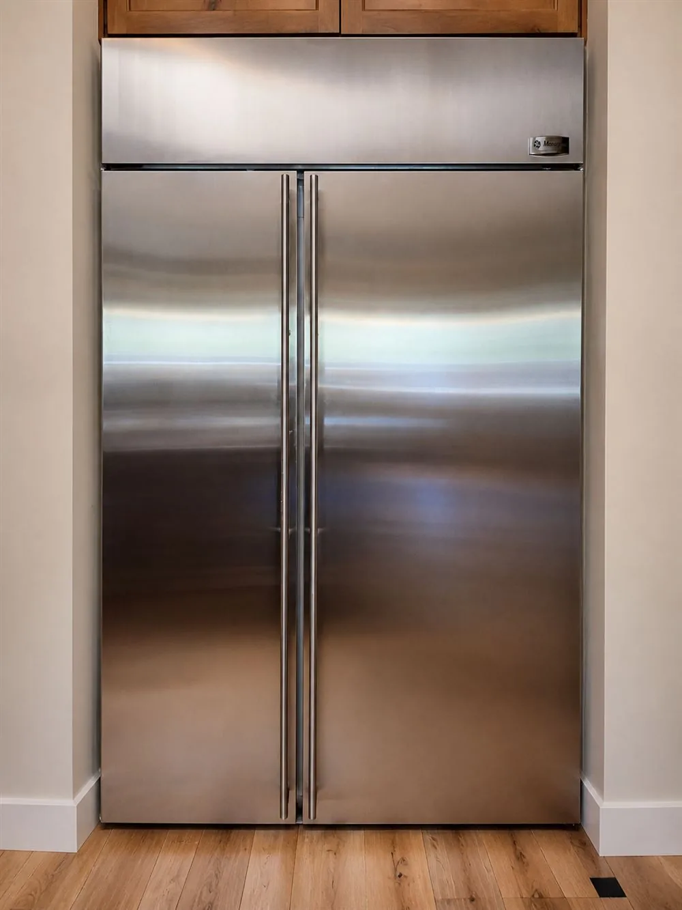

Greater Tucson appliance service
Refrigerator Repair
Careful diagnosis for refrigerators and freezers that are not cooling, making unusual noise, leaking or having trouble with ice and water.

Refrigerator help
Find the cause before deciding on the repair.
A refrigerator problem can involve airflow, defrost operation, temperature control, water delivery or another part of the cooling system. House & Hand starts by confirming the symptom and testing the functions that relate to it, then explains what was found and what the repair would involve.
Problems we can evaluate
Common service concerns include fresh-food or freezer temperatures, frost or ice buildup, water leaks, noisy fan operation, ice-maker trouble and weak or interrupted dispenser flow. Model and parts availability affect what can be completed and how quickly.
What to send before scheduling
Your service address, a clear photo of the model tag and a short description of the symptom help confirm that the appliance and location fit the current schedule.
Spooky savings
$85 diagnostic
Schedule by November 1, 2026.
Regular diagnostic rate $110. Offer applies to diagnostic appointments scheduled through November 1, 2026. Cannot be combined with another offer.Related service
Appliance repair where you live.
Need refrigerator help?
Tell us what it is doing.
Call with your address, model number and a brief description. We will confirm whether the appliance and location are within our current schedule.